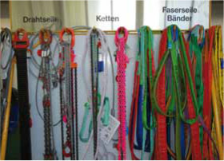
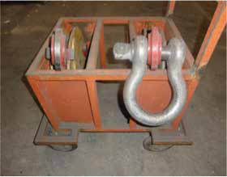

Anschlagketten und Anschlagseile werden zweckmäßigerweise an Gestellen hängend aufbewahrt.
Sie müssen trocken und luftig sowie gegen die Einwirkung von Witterungseinflüssen und aggressiven Stoffen geschützt gelagert werden (Bild 24-1).

Bild 24-1: Vorbildliche Aufbewahrung von Seilen und Ketten
Es ist zweckmäßig, schwere Anschlagmittel mit großen Aufhängegliedern so in Aufnahmevorrichtungen zu lagern, dass der Kranfahrer sie direkt mit dem Kranhaken aufnehmen kann (Bild 24-2).

Bild 24-2: Abgestellte, gegen Umfallen gesicherte Lastaufnahmemittel
Dadurch ist es nicht mehr notwendig, das schwere Aufgängeglied mit der Hand aufzulegen.
Für die Finger entfällt die Quetschgefahr.
Nicht gekennzeichnete Anschlagmittel dürfen nicht verwendet werden.